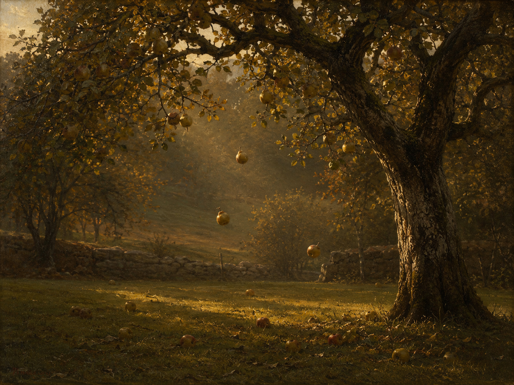

Dies ist ein Herbsttag, wie ich keinen sah!
关系从句 "wie ich keinen sah" 中的 keinen 是第四格阳性，回指 einen Herbsttag："（这样的秋日）我从未见过一个"。德语用 wie 引导这类比较性关系从句（"ein Mensch, wie ich keinen kenne"）。sah 为过去时。开篇的感叹号定下全诗的惊异语气。
秋景
《诗集》
现实主义 / 毕德麦耶晚期
1852年10月作于维也纳

图片由 AI 生成
Dies ist ein Herbsttag, wie ich keinen sah!
关系从句 "wie ich keinen sah" 中的 keinen 是第四格阳性，回指 einen Herbsttag："（这样的秋日）我从未见过一个"。德语用 wie 引导这类比较性关系从句（"ein Mensch, wie ich keinen kenne"）。sah 为过去时。开篇的感叹号定下全诗的惊异语气。
Die Luft ist still, als atmete man kaum,
als（仿佛）引导的非现实比较从句，动词用第二虚拟式 atmete 并紧跟在 als 之后（不带 ob 时必须倒装）。man kaum atmete 意为"人几乎不呼吸"——不是说没有人在呼吸，而是说空气静到连呼吸都显得多余。
Und dennoch fallen raschelnd, fern und nah,
dennoch（然而、尽管如此）标出全诗的第一个转折：空气完全静止，却仍有东西在落。raschelnd 是现在分词作状语（"簌簌作响地"），拟声。fern und nah 是不带冠词的固定对举。注意本行的主语要到下一行才出现。
Die schönsten Früchte ab von jedem Baum.
可分动词 abfallen（脱落）的前缀 ab 在此被推到主语之后（fallen … ab），这是德语框型结构的典型效果。请注意：落下的不是枯叶，而是"最美的果实"——成熟到极致的东西自己脱落，这是全诗的核心命题。
O stört sie nicht, die Feier der Natur!
第二节由描写转为直接劝诫。stört 是第二人称复数命令式（对读者说话）。sie 先出现，其所指 "die Feier der Natur" 作为同位语后置补充——这是德语中常见的"右移"（Rechtsversetzung）结构，口语中也很常见。die Feier（庆典、仪式）一词把落果提升为一场典礼。
Dies ist die Lese, die sie selber hält,
die Lese 特指采摘葡萄或果实的收获（动词 lesen 在此为古义"拾取、采集"，与"阅读"同形——参见 die Weinlese 葡萄采收、Ähren lesen 拾麦穗）。sie 指上一行的 die Natur。"自然亲自举行的收获"意味着无需人手介入。
Denn heute löst sich von den Zweigen nur,
sich lösen（脱落、松开）为反身动词。nur（唯有）位于行末，它所限定的内容要到下一行才揭晓——这一悬置使最后一行获得了格言般的分量。
Was vor dem milden Strahl der Sonne fällt.
was 引导的自由关系从句作上一行 nur 的补足语。介词 vor 在此含义微妙：既可理解为空间上的"在……面前"，也可理解为因果上的"由于"（如 "vor Freude weinen" 因喜悦而哭）。两种读法都成立——果实是"在阳光面前"坠落，也是"因为阳光"而坠落。这一歧义是全诗最耐读之处，翻译无法两全。
| Infinitiv | Präsens 3. Sg. |
Präteritum | Perfekt | Partizip II | Konjunktiv II | Hilfsverb |
|---|---|---|---|---|---|---|
| sehen | sieht | sah | hat gesehen | gesehen | sähe | haben |
| ↳ 强变化，现在时单数变元音 e→ie；诗中过去时 sah 位于关系从句末尾。 | ||||||
| atmen | atmet | atmete | hat geatmet | geatmet | atmete | haben |
| ↳ 词干以 -m 加辅音结尾，因此各人称一律插入 -e-（du atmest, er atmet）。诗中第二虚拟式 atmete 与过去时同形——弱变化动词的这两个时态形态相同，只能靠 als、wenn 等语境标记区分。 | ||||||
| abfallen | fällt ab | fiel ab | ist abgefallen | abgefallen | fiele ab | sein |
| ↳ 可分动词，强变化（a–ie–a）；诗中复数现在时 fallen … ab，前缀与词干之间隔了整整一行。 | ||||||
| stören | stört | störte | hat gestört | gestört | störte | haben |
| ↳ 诗中第二人称复数命令式 stört（与陈述式同形，靠语序与不带主语识别）。 | ||||||
| halten | hält | hielt | hat gehalten | gehalten | hielte | haben |
| ↳ 诗中 "die Lese halten" 意为"举行采收"，属 halten 表"举办、进行"的用法（eine Rede halten 发表演讲、Hochzeit halten 举行婚礼）。 | ||||||
| sich lösen | löst sich | löste sich | hat sich gelöst | gelöst | löste sich | haben |
| ↳ 弱变化反身动词；诗中主语是下一行的自由关系从句 "Was … fällt"。 | ||||||
Die Luft ist still, als atmete man kaum,
O stört sie nicht, die Feier der Natur!
Denn heute löst sich von den Zweigen nur, / Was vor dem milden Strahl der Sonne fällt.
Was vor dem milden Strahl der Sonne fällt.
《秋景》1852年10月写于维也纳，当时黑贝尔39岁。黑贝尔主要以悲剧闻名（《玛丽亚·玛格达莱娜》《尼伯龙根》），抒情诗数量不多，但这首八行诗是德语秋天诗中最常被选入课本的作品之一。
评论家米夏埃尔·布劳恩指出，这首诗抓住的是一个极短的时刻：夏天熄灭、自然在秋天的征兆显现之前短暂停顿的那一瞬——生长与成熟已经结束，无可挽回的消逝刚要开始。全诗的巧思在第一节的转折上：空气完全静止（连呼吸都仿佛停了），然而果实仍在落。不是风把它们打下来，而是它们熟透了，自己脱落。第二节把这一现象命名为"自然的庆典"与"自然亲自举行的采收"，并要求旁观者不要插手。
有评论者认为第二节那种近乎说教的口吻（"哦，不要打扰它！"）稍稍破坏了第一节所营造的、对造化奇迹的静观。这一批评有其道理，但也可以反过来看：正是因为说话者忍不住要出声阻止，我们才知道他有多怕这一刻被打断。
这首诗常被拿来与里尔克的《秋日》（本站编号10）对读：两首都写秋天的成熟，但里尔克的说话者在催促（"命令最后的果实饱满起来"），黑贝尔的说话者在制止（"不要打扰"）。一个要促成，一个要退开。
中文译文为本站学习译文（AI 辅助），采用直译。需要说明的是最后一行的介词 vor：它在德语中同时可读作空间的"在……面前"与原因的"因为"，译文取前者作"在太阳温和的光线下"，但请学习者参见"语法要点"了解另一层含义——这一歧义在中文里无法两全。第5行的同位语后置（sie … die Feier der Natur）译文以"不要打扰它，这自然的庆典"保留了原句的语序与落点。此外，本诗与里尔克《秋日》（本站编号10）主题相邻而姿态相反，建议对读。已知此诗存在多个中文译本，因版权原因本站不转载具体译本全文。
德文正文通过两个独立来源（gedichte7.de 与 planetlyrik.de 所刊《德国广播电台抒情诗历 2008》文本）逐词逐标点核对，两节各四行，两来源完全一致，未发现异文。一处值得记录的旁证：planetlyrik.de 的评论区在2025年11月有读者指出该页第4行曾误作 "die schönen Früchte"，编辑部随即更正为 "die schönsten Früchte"（最美的果实）——这一最高级是全诗的关键（落下的不是随便什么果子，而是最好的那些），本站采用的正是更正后的文本，与 gedichte7.de 一致。创作时间与地点（1852年10月，维也纳）取自 planetlyrik.de 转载的 Michael Braun 评注。需说明的是，本站未直接查阅黑贝尔《诗集》原刊或历史批评版，标点与分节依据上述两个数字化来源，属待进一步核实项；此诗在黑贝尔诗集中的具体辑目归属本站亦未查明。
【来源独立性复核（2026年8月）】本站在第四批录入时发现并确认：本诗所引 gedichte7.de 依 SOURCES.md 第 4 节属三级来源；去掉三级来源后，本诗仅剩 1 个独立来源组（planetlyrik）；本诗尚无一级来源（标注纸质校勘版出处的数字化全集），依规则 D 可信度偏低。需要说明的是，本诗的德文正文此前**并非只有单一来源**——上列各来源之间的逐词比对确已完成，比对结果如上文所载，本站不撤回任何已记录的比对结论。但按本项目现行的《来源独立性规范》（见仓库根目录 SOURCES.md），本诗的来源配置尚未达标，**补入一个额外的独立来源属未完成事项**，已列入下方 checklist。在补齐之前，请读者将本诗的文本可信度视为低于本站其他已达标条目。
【复核完成（2026年8月）】补入 **Zeno.org 转录的《黑贝尔全集》第一部分「作品」卷（Berlin，1911年起，第232页）** 作为一级来源。此前本诗的两个来源（gedichte7.de 与 planetlyrik.de）分别属三级与二级，既不满足独立性要求、也无一级来源；现已同时补齐。
三方逐词比对结果：**八行的用词、语序、标点完全一致，未发现任何实质异文**。Zeno 版与本站文本的全部差别都属19世纪正字法，兹逐条列出以备查：(1) 第1、6行 `Dieß`（本站 `Dies`）；(2) 第2行 `athmete`（本站 `atmete`，19世纪 th 拼写）；(3) 第3行 `nah'`（本站 `nah`，带省字符）；(4) 第7行 `lös't`（本站 `löst`）；(5) 第8行 `Stral`（本站 `Strahl`）。本站维持现代化正字法的通行文本，理由与巴洛克作品的处理原则一致（面向学习者，便于查词典），原刊形态已如上完整记录。
另一项收获：Zeno 版确认本诗在1857年 Cotta「最后手定版」中归入「杂诗」（Vermischte Gedichte）辑，补上了此前"辑目归属未查明"的待核实项。